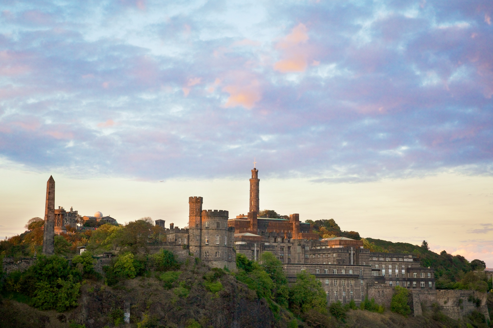

North Berwick，一译北贝里克，是苏格兰的一个海边小镇，距爱丁堡25公里。它从19世纪开始即成为热门的度假胜地。
探索祖国大好河山，喜欢探索自然精致为主，喜欢探索景色独特知名度不一定高，如阿尓山、马岭河峡谷、小七孔、开平碉楼、巴丹吉林沙漠、漠河。但也不放弃名山大川，如泰山、张家界、黄果树、江南园林、敦煌、秦始皇兵马俑。港澳特区，东南亚是开始，是好的中转目的地，土耳其、澳大利亚独特而迷人；而对于未来还有更多最美的期待！
这里是特殊引用或者其他来源文字
探索祖国大好河山，喜欢探索自然精致为主，喜欢探索景色独特知名度不一定高，如阿尓山、马岭河峡谷、小七孔、开平碉楼、巴丹吉林沙漠、漠河。但也不放弃名山大川，如泰山、张家界、黄果树、江南园林、敦煌、秦始皇兵马俑。港澳特区，东南亚是开始，是好的中转目的地，土耳其、澳大利亚独特而迷人；而对于未来还有更多最美的期待！
探索祖国大好河山，喜欢探索自然精致为主。
探索祖国大好河山，喜欢探索自然精致为主，喜欢探索景色独特知名度不一定高，如阿尓山、马岭河峡谷、小七孔、开平碉楼、巴丹吉林沙漠、漠河。但也不放弃名山大川，如泰山、张家界、黄果树、江南园林、敦煌、秦始皇兵马俑。港澳特区，东南亚是开始，是好的中转目的地，土耳其、澳大利亚独特而迷人；而对于未来还有更多最美的期待！
探索祖国大好河山，喜欢探索自然精致为主，喜欢探索景色独特知名度不一定高，如阿尓山、马岭河峡谷、小七孔、开平碉楼、巴丹吉林沙漠、漠河。但也不放弃名山大川，如泰山、张家界、黄果树、江南园林、敦煌、秦始皇兵马俑。港澳特区，东南亚是开始，是好的中转目的地，土耳其、澳大利亚独特而迷人；而对于未来还有更多最美的期待！
探索祖国大好河山，喜欢探索自然精致为主，喜欢探索景色独特知名度不一定高，如阿尓山、马岭河峡谷、小七孔、开平碉楼、巴丹吉林沙漠、漠河。但也不放弃名山大川，如泰山、张家界、黄果树、江南园林、敦煌、秦始皇兵马俑。港澳特区，东南亚是开始，是好的中转目的地，土耳其、澳大利亚独特而迷人；而对于未来还有更多最美的期待！
探索祖国大好河山，喜欢探索自然精致为主，喜欢探索景色独特知名度不一定高，如阿尓山、马岭河峡谷、小七孔、开平碉楼、巴丹吉林沙漠、漠河。但也不放弃名山大川，如泰山、张家界、黄果树、江南园林、敦煌、秦始皇兵马俑。港澳特区，东南亚是开始，是好的中转目的地，土耳其、澳大利亚独特而迷人；而对于未来还有更多最美的期待！
探索祖国大好河山，喜欢探索自然精致为主，喜欢探索景色独特知名度不一定高，如阿尓山、马岭河峡谷、小七孔、开平碉楼、巴丹吉林沙漠、漠河。但也不放弃名山大川，如泰山、张家界、黄果树、江南园林、敦煌、秦始皇兵马俑。港澳特区，东南亚是开始，是好的中转目的地，土耳其、澳大利亚独特而迷人；而对于未来还有更多最美的期待！
探索祖国大好河山，喜欢探索自然精致为主，喜欢探索景色独特知名度不一定高，如阿尓山、马岭河峡谷、小七孔、开平碉楼、巴丹吉林沙漠、漠河。但也不放弃名山大川，如泰山、张家界、黄果树、江南园林、敦煌、秦始皇兵马俑。港澳特区，东南亚是开始，是好的中转目的地，土耳其、澳大利亚独特而迷人；而对于未来还有更多最美的期待！
- http://www.north-berwick.co.uk
- Donec id elit non mi porta gravida at eget metus.
- Nulla vitae elit libero, a pharetra augue.
Etiam porta sem malesuada magna mollis euismod. Cras mattis consectetur purus sit amet fermentum. Aenean lacinia bibendum nulla sed consectetur.
Donec ullamcorper nulla non metus auctor fringilla. Nulla vitae elit libero, a pharetra augue.